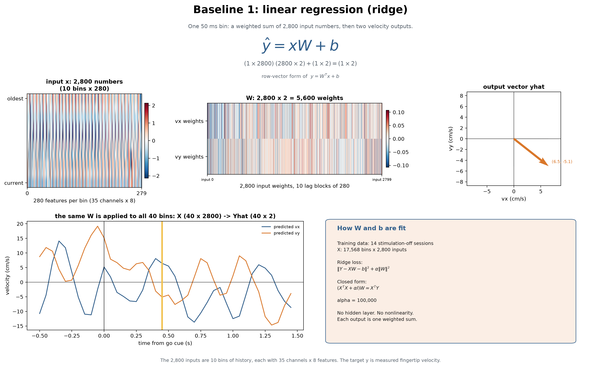
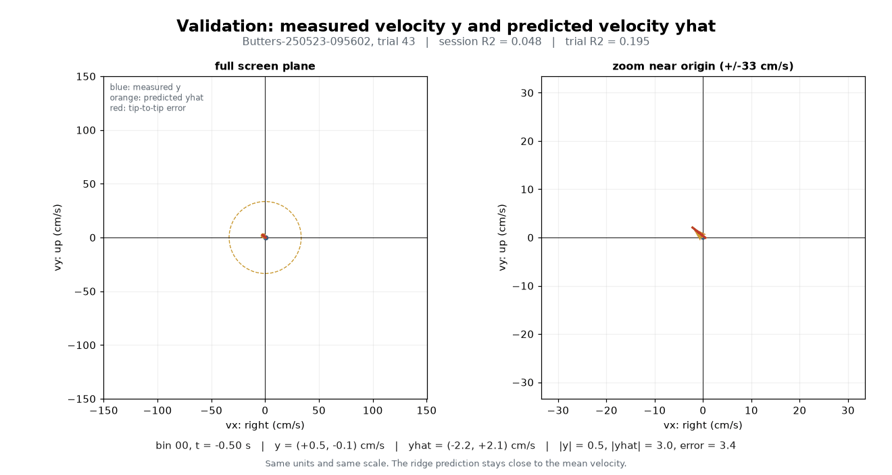
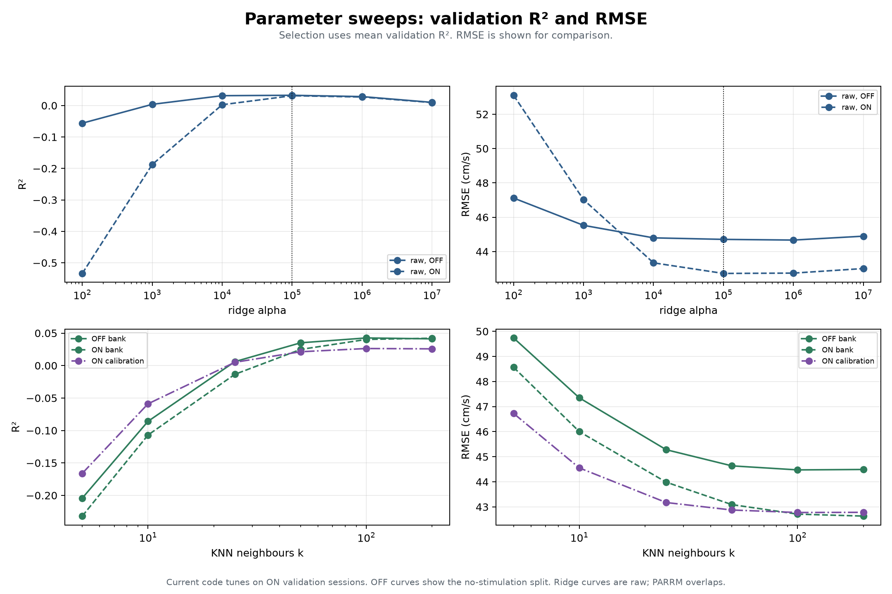

Each 50 ms bin is a vector of 2,800 inputs: 10 history bins, 35 electrodes, 8 features. The weight matrix W is 2,800 by 2. The output is two numbers, vx and vy. The same W is applied to all 40 bins of a trial.

A held-out validation trial. Blue is the measured velocity vector y, orange is the ridge prediction yhat, and red is the tip-to-tip error. The left panel uses the full screen scale. The right panel zooms near the origin because the prediction stays close to the mean velocity.

Selection uses mean validation R², not RMSE. The dotted line is the chosen ridge alpha, 100,000. RMSE is shown because it has the same units as velocity and can rank models differently.
